hi, I'm
Ajmal Ibn Mohammed Althaf
I'm a physicist from Kerala. I study molecules with quantum mechanics, I teach, and I'm building QuantumX with two friends.
Kerala & Bangalore, India
psst: six photons are hiding on this page

About
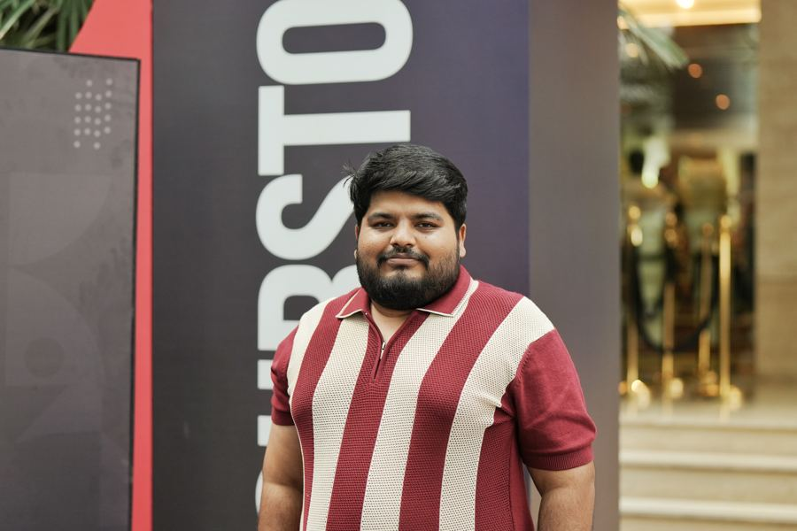
I trained as a physicist at the University of Calicut and VIT, and I'm now a part-time PhD researcher at the Kalasalingam Academy of Research and Education, working on molecular quantum mechanics.
Most of my working life has been spent teaching. I've taught physics in colleges, led a physics department, and built school curricula in quantum computing. Since 2020 I've run small communities that teach quantum computing in Malayalam, because language shouldn't decide who gets to learn this.
In 2025 I co-founded QuantumX, where I'm CEO and scientific lead. I'm also a Qiskit Advocate with IBM Quantum and was part of the LIGO India science communicator programme.
Off the clock: testing Linux distros, basketball, and mentoring students who are figuring out what to do next. I speak Malayalam, English, Hindi and Arabic, with some Tamil and a little French.
-
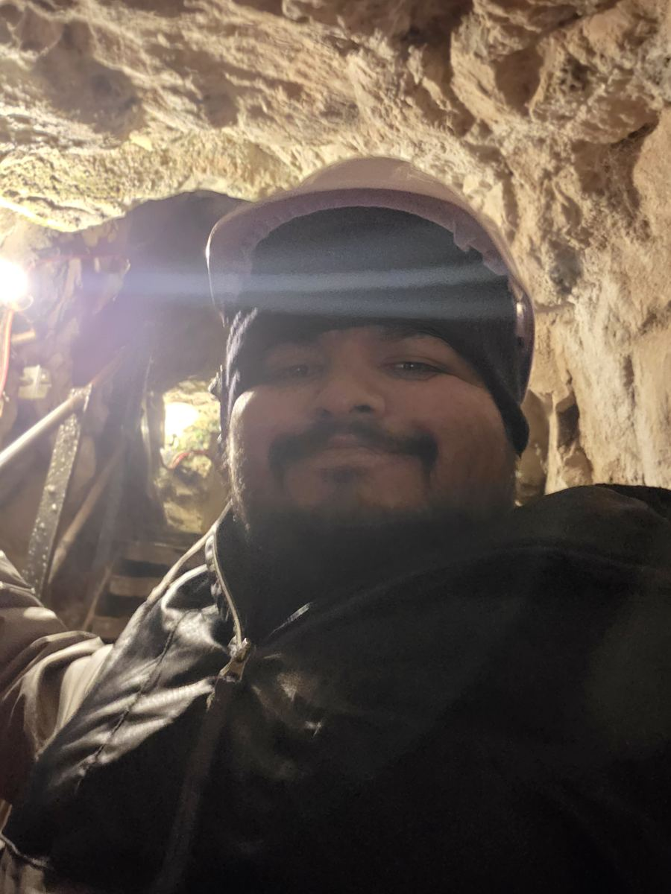
underground, hard hat on
-
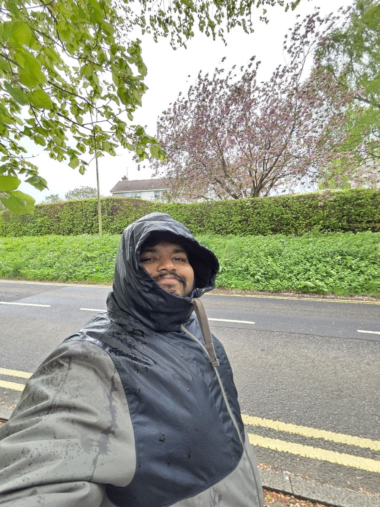
it rained. a lot.
-
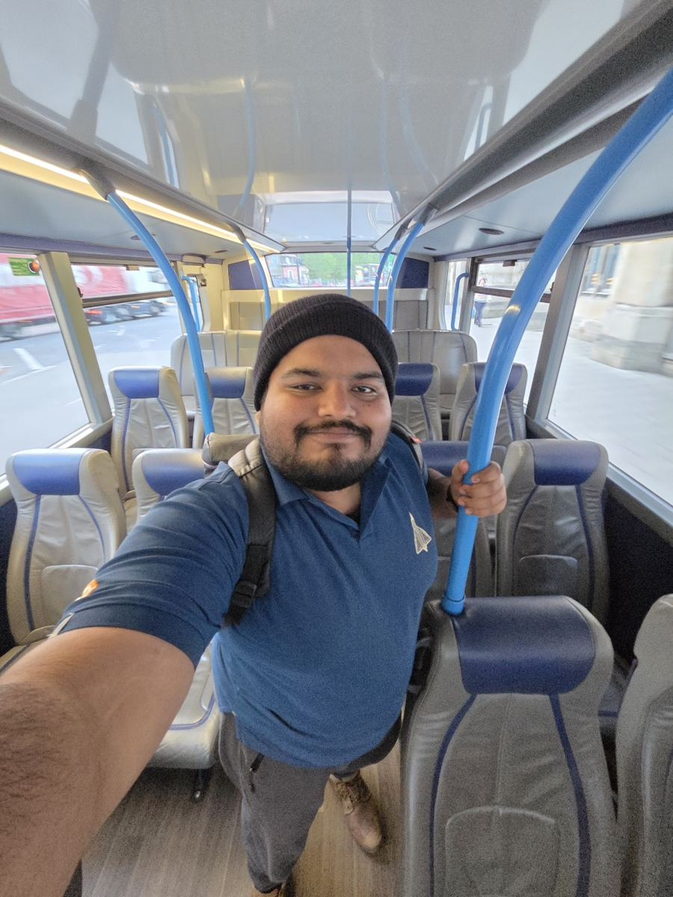
top deck, front seat taken
-
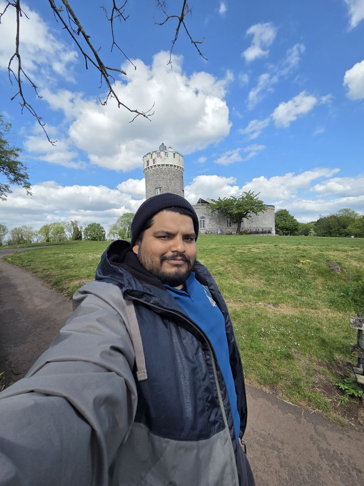
a tower, a hill, good clouds
Research
Now: PhD, molecular quantum mechanics
Computational and spectroscopic studies of bioactive compounds, with a focus on molecules relevant to cancer research.
Before that
My M.Sc. thesis at VIT, Decoherence in Quantum Communication Protocols (2021), looked at how noise and entanglement affect bidirectional quantum communication between non-maximally entangled parties, using noise models and fidelity calculations.
Papers and conference talks
- Advancing Materials Science: A Synergistic Review of Quantum Computing and ML in Density Functional Theory ICNMD-24, KARE · 2024
- Effect of Damping in a Non-Maximally Entangled Bidirectional Quantum Communication Protocol 21st ICSET, VIT · 2020
- Controller-Independent Bidirectional Quantum Communication Using Entanglement Swapping 19th ICSET, VIT · 2019
tools I use Python, Qiskit, Quantum ESPRESSO, MATLAB, COMSOL, LaTeX, Linux
-
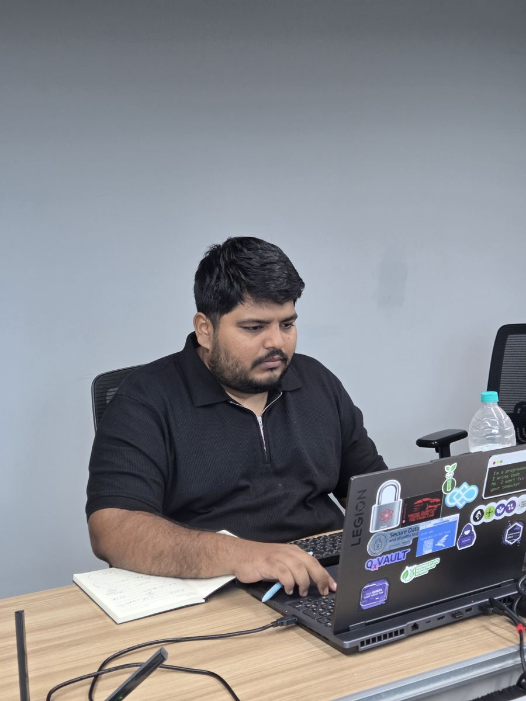
where the calculations happen
-
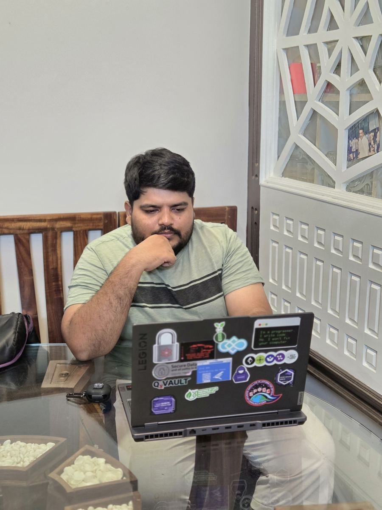
thinking it through at home
QuantumX
I started QuantumX in September 2025 with two friends. It brings together quantum science education, research and community. I'm CEO and lead the science side.
So far, our courses have reached learners in 12 countries, our community has grown past 2,000 people, and we hosted IBM's Qiskit Fall Fest in India in 2026. I still teach there, mostly through the Quantum Access School.
-
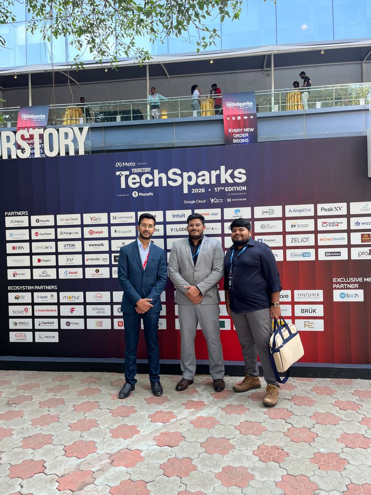
TechSparks 2026, Bangalore
-
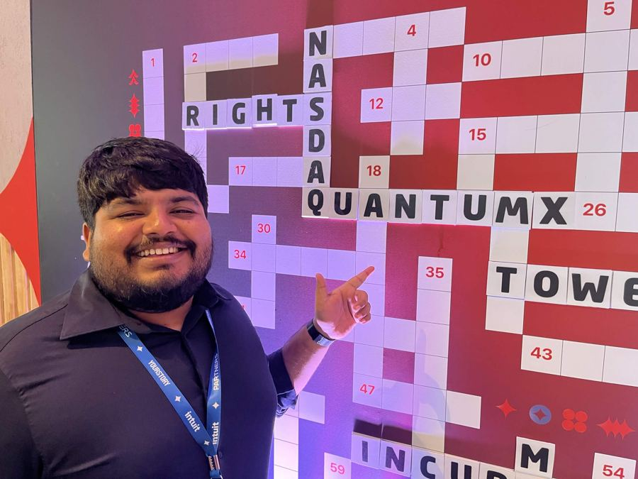
we made the crossword
-
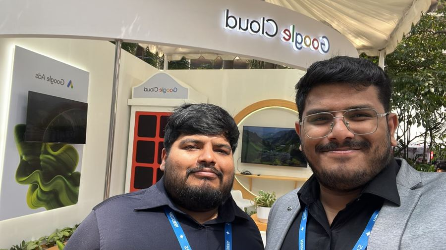
at the Google Cloud booth
-
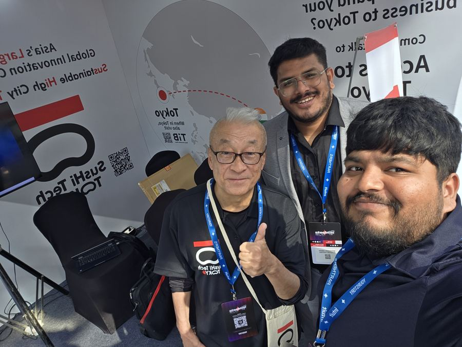
new friends at SusHi Tech Tokyo
-
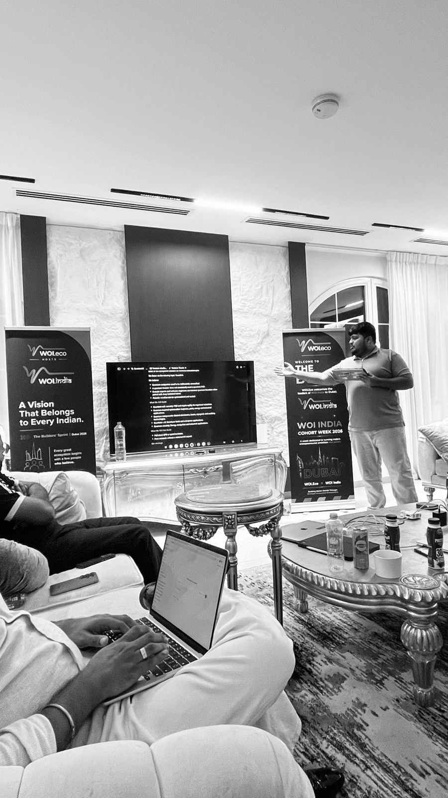
presenting in Dubai, WOI India cohort week
Teaching & Talks
Teaching
- 2025 – now Quantum Access School, QuantumX
- 2025 Started Kerala's first school-level quantum computing track (Steyp, School Scientists). Python and IBM Quantum for 500+ students in grades 8–12.
- 2023 – 25 Physics education research and curriculum, Talrop
- 2023 Assistant Professor (ad hoc), Engineering Physics, Government Engineering College Wayanad
- 2022 – 23 Head of Physics, The Elegant College of Arts and Science, Palakkad. Mentored 11 undergraduate research projects.
- 2020 – now Q. Enthusiasts Kerala: quantum computing taught in Malayalam
Talks
- Digital Divide in Quantum Education Quantum Universal Education, online · 2021
- Conference talks on quantum communication and DFT see Research
Science communication
- Qiskit Advocate IBM Quantum · 2026
- LIGO India Gravitational-Wave Science Communicator Programme one of 100 selected · 2021
-
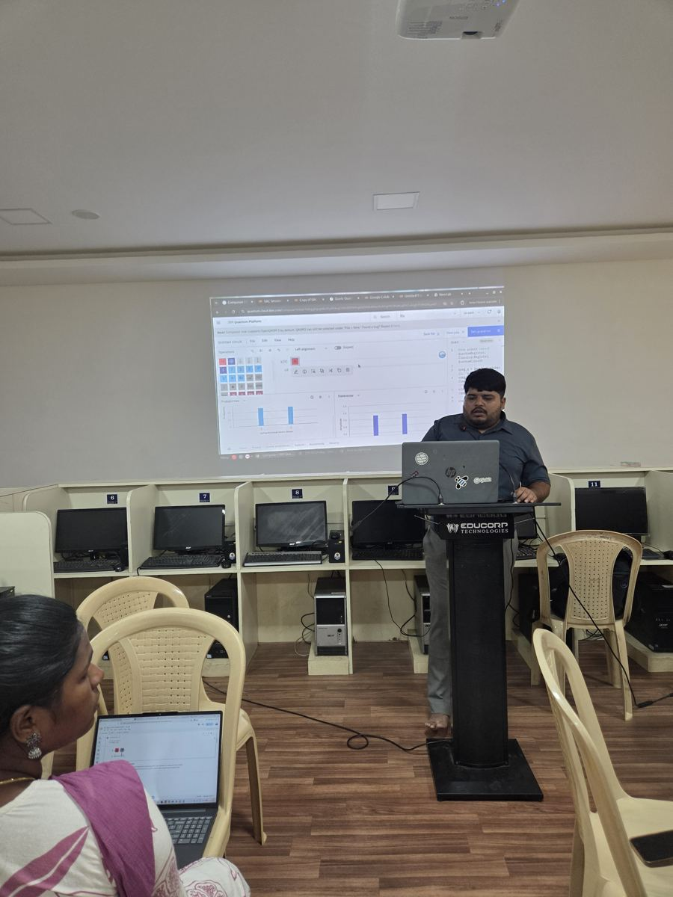
a first quantum circuit, live
-
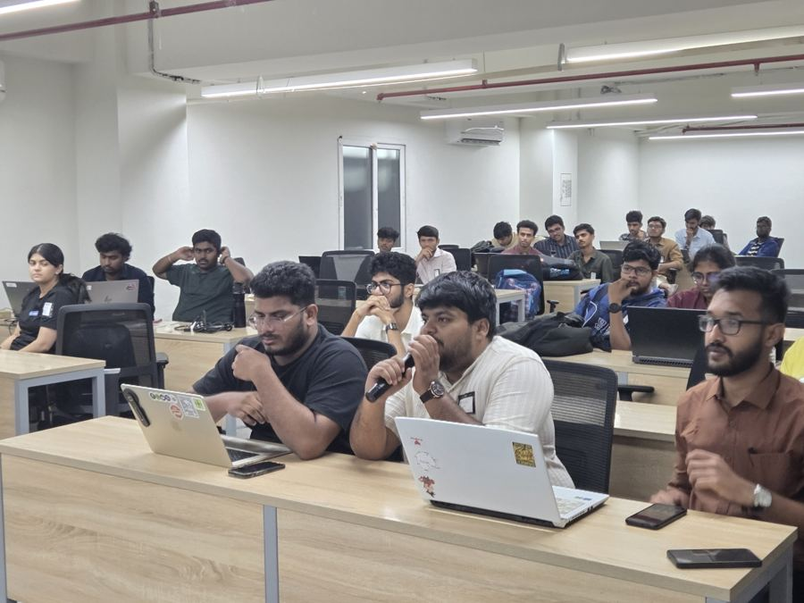
asking a question from the floor
Writing
Notes on physics, quantum computing and teaching will go here. Nothing is posted yet.
Meanwhile, I explain things on video on my YouTube channel, which I've run since 2020, and post shorter thoughts on LinkedIn.
Say hello
Email is the best way to reach me.